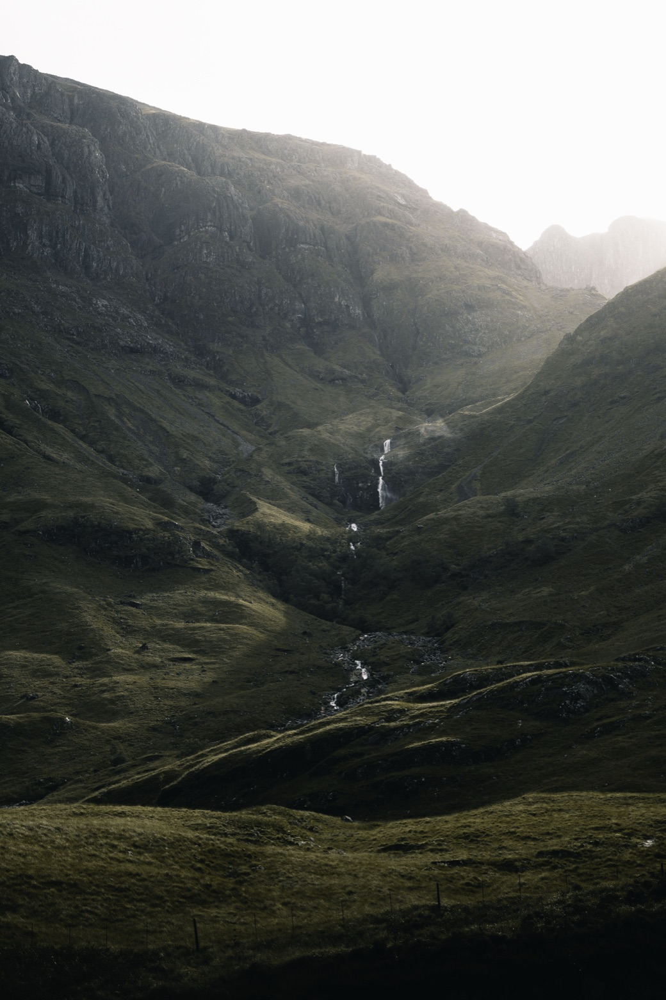
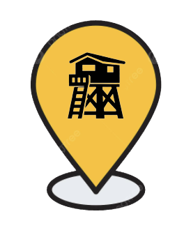
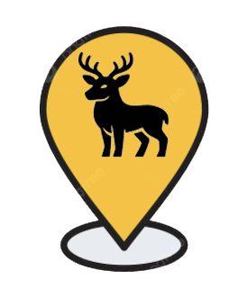
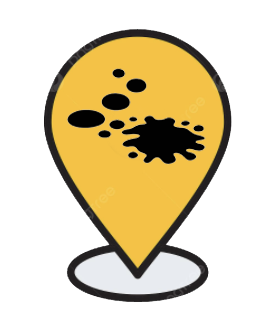
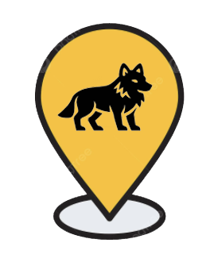
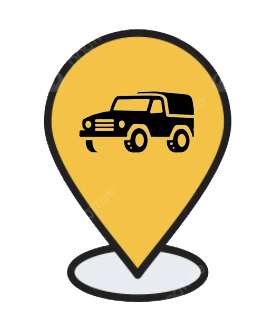

hound
find what's important
tippen zum starten
v23-44

GPS…
home
Mark your location and
let yourself be guided back.

mark
Mark your target before the
shot and let yourself be
guided to the point of
impact.

track
Follow the blood trail and
find your prey.

wolfpack
Hunt together, share targets,
and plan your strategy.

–
← h.o.u.n.d.
ziele
GPS…
Noch keine Ziele markiert.
← h.o.u.n.d.
track
GPS…
▲
0
Punkte
0 Suchen gespeichert
＋
Blutpunkt setzen
↩ Undo
✚ Neue Suche
✓ Tier gefunden
⬇ Sicherung
⬆ Laden
GPS…
home
Mark your location
Calibrate compass
—
Offset
Mark your location
Deer stand

Car
Mark your location
Deer stand
— m
Car
— m
Calibrate compass
—
Offset
GPS…
mark
Mark your target
Hochsitz
Auto
Anschuss
← home
Tippe ein Ziel an
🗺 Karte
GPS…
Entfernung
—
Kurs
—°
Höhe ±
—m
✓ ZIEL GEFUNDEN
Standort in < 8 Meter
OK – verstanden
← Zurück
GPS…
home
Calibrate compass
Step 1
Choose a fixed reference point 50–200 m away
(tree, pole, hut, corner). Aim at it and tap.
Capture reference point
GPS…
home
Calibrate compass
Step 2
Tap the reference point’s actual location on the map.
Tap again to fine-tune.
Save offset
GPS…
mark
Tilt
Direction
GPS
—
—
—
…
Capture target
Position
Stalking
Blind
High seat
Distance
m
Tilt
Direction
GPS
—
—
—
Save target
Anschuss
Navigation
GPS…
Entfernung
—
Kurs
—°
Höhe ±
—m
🎯 ZIEL GEFUNDEN
Anschuss in < 8 Meter
OK – verstanden
← Neuen Anschuss markieren